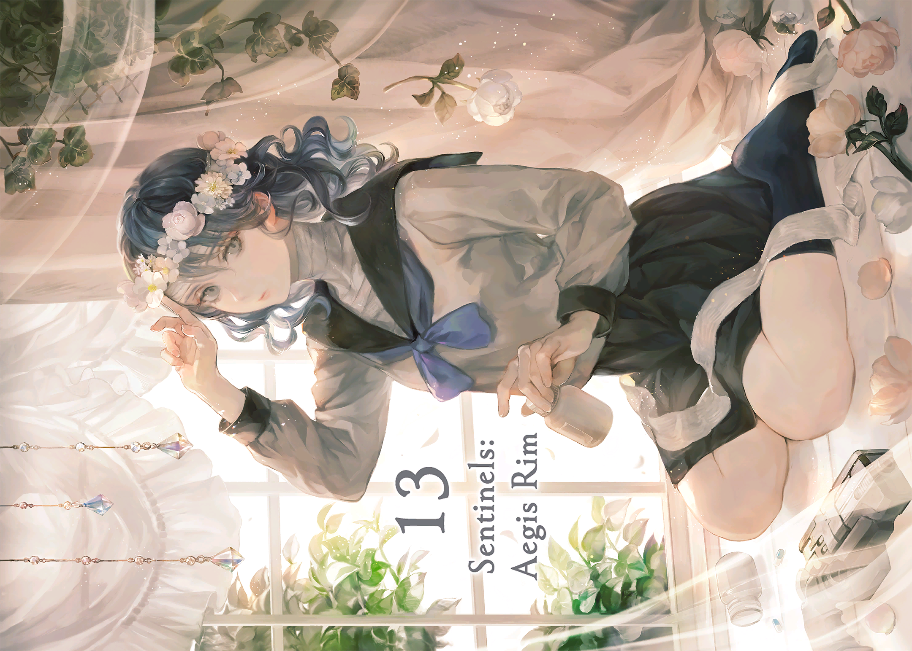

- 从nsp中dump Romfs
- 13机兵的digital artwork dump出来的Romfs是三个cpk文件，用CPK Browser 或者quickbms+cpk.bms 把cpk解包
- 解包后的文件(.ftx, .mbs, .fsb) 中，猜测ftx后缀为texture文件。用xentax论坛用户pasta提供的python脚本 可以解开ftx文件
- 使用Rawtex即可将拆分的ftx(即nvt文件)转换为dds和png。但论坛所说的参数有误，不应是BC7,而是 Offset 100 + BC3(bc3_unom) + Switch swizzle + 自动识别宽高大小(或4096x4096)。如果转换后的texture有条纹状坏块，可能要重新尝试其他Offset值。
- 转换后的texture包含数个图片，最后使用PS、GIMP将不需要的图crop掉即可。
解包出来的美图

参考
- https://gbatemp.net/threads/how-do-i-extract-romfs-from-an-nsp.518650/
- https://metalgearmodding.fandom.com/wiki/FTEX/FTEXS#Format_-_Ftexs
- https://forum.xentax.com/viewtopic.php?f=18&t=10647
- https://www.richwhitehouse.com/index.php?content=inc_projects.php&showproject=91
- https://www.ninjaripper.com/
- https://github.com/SciresM/hactool
- https://archive.org/download/nintendo-switch-global-firmwares
- https://github.com/HiDe-Techno-Tips/Nintendo-Switch-Files/blob/main/prod.keys
- https://zenhax.com/viewtopic.php?t=16607
相关 - https://forum.xentax.com/viewtopic.php?p=87043#p87043
- https://forum.xentax.com/viewtopic.php?p=87089#p87089